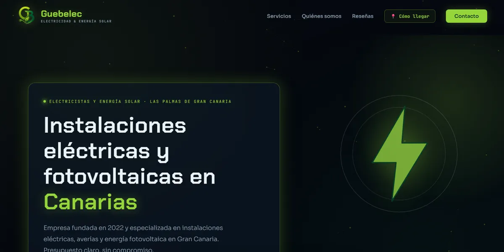
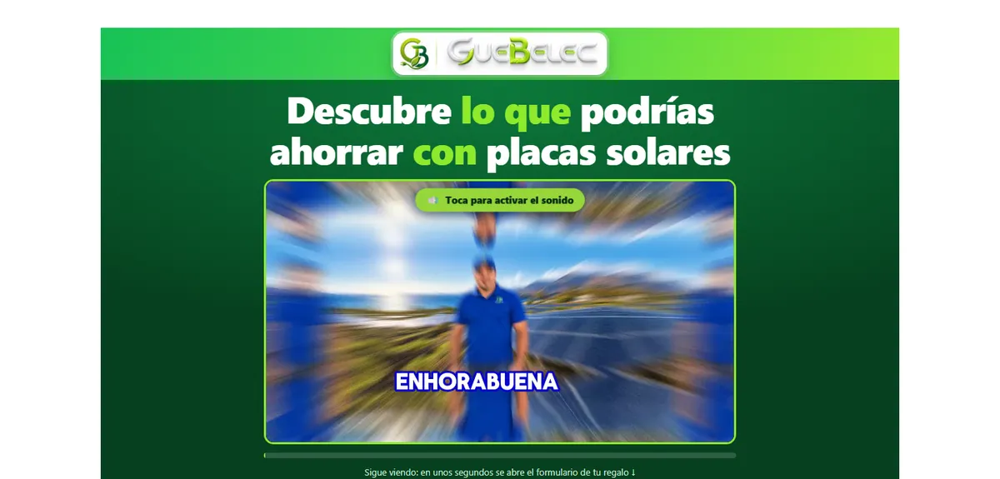

En producción
Guebelec, S.L. — sistema completo de captación con IA
Empresa de instalaciones eléctricas y fotovoltaicas de Gran Canaria. Servicio mensual desde septiembre de 2026.
- Meta Ads
- Landing + quiz
- CRM GoHighLevel
- Automatizaciones
- Agente IA WhatsApp 24/7
- Web corporativa en GHL con dominio propio y SEO local: JSON-LD, sitemap, Search Console y Business Profile.
- Landing de ahorro con vídeo que desbloquea el formulario, quiz y calculadora como gancho.
- CRM con pipeline, etiquetas y guía de uso para el gerente.
- Creatividades con avatar y voz clonada del gerente (HeyGen): VSL, reels y anuncios estáticos.

